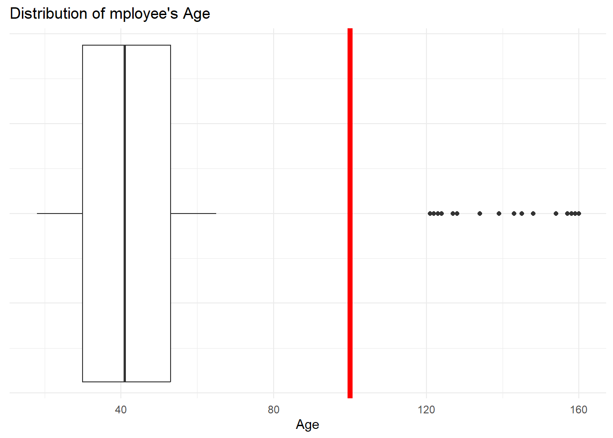

library(tidyverse)17 Data Cleaning
17.1 Import the dirty dataset
R
employee_df <- read_csv("data/dirty_employee_data.csv")- 1
- Import the employee dataset.
Rows: 1050 Columns: 10
── Column specification ────────────────────────────────────────────────────────
Delimiter: ","
chr (6): First.Name, LAST_NAME, Gender, Department, HireDate, emp_period
dbl (4): Emp ID, AGE, Salary, perf_score
ℹ Use `spec()` to retrieve the full column specification for this data.
ℹ Specify the column types or set `show_col_types = FALSE` to quiet this message.17.2 Find the dirt
17.2.1 Data Struture
R
glimpse(employee_df)Rows: 1,050
Columns: 10
$ `Emp ID` <dbl> 17487, 27710, 44887, 84983, 99418, 63517, 76074, 58813, 575…
$ First.Name <chr> "David", "Jane", "Sarah", "Mary", "Robert", "John", "Emily"…
$ LAST_NAME <chr> "Garcia", "Johnson", "Rodriguez", "Miller", "Martinez", "Br…
$ Gender <chr> "Female", "Male", "Female", "F", "Male", "Female", "Male", …
$ AGE <dbl> 55, 57, 26, 42, 31, 50, 23, 42, 46, 34, 36, 57, 39, 19, 55,…
$ Department <chr> "Human Resource", "Finance", "Finance", "Marketg", "Human R…
$ Salary <dbl> 48190, 25895, 64947, 71114, 52962, 52213, 52504, 76424, 458…
$ HireDate <chr> "2019-11-09", "2019-07-16", "2012-01-04", "2020-01-26", "20…
$ perf_score <dbl> 3, 9, 10, 10, 8, 1, 5, 4, 4, 9, 3, 4, 3, 6, 8, 4, 3, 8, 3, …
$ emp_period <chr> "2012 - 2015", "2016 - 2018", "2016 - 2014", "2016 - 2018",…The data contains 1,050 rows and 10 columns. based on the present records as shown above, there are different data type. …
Data Dictionary
The employee_df contains dirty records of both past and present employees including the variables:
- Emp ID: A unique id assigned to each employee
- First.Name: Employee’s first name.
- LAST_NAME: Employee’s last name.
- Gender: The imputed gender of employees.
- AGE: The age of employee
- Department: The department the employee belongs to.
- Salary: The monthly gross salary of each employee.
- HireDate: The date in which the employee started with the company
- perf_score: The most recent performance score of the employee.
- emp_period1: The period of employment.
R
head(employee_df)- 1
- Retrieve the first 5 rows in the table.
# A tibble: 6 × 10
`Emp ID` First.Name LAST_NAME Gender AGE Department Salary HireDate
<dbl> <chr> <chr> <chr> <dbl> <chr> <dbl> <chr>
1 17487 David Garcia Female 55 Human Resource 48190 2019-11-09
2 27710 Jane Johnson Male 57 Finance 25895 2019-07-16
3 44887 Sarah Rodriguez Female 26 Finance 64947 2012-01-04
4 84983 Mary Miller F 42 Marketg 71114 2020-01-26
5 99418 Robert Martinez Male 31 Human Resource 52962 2014-11-21
6 63517 John Brown Female 50 HR 52213 2018-01-06 A…
# ℹ 2 more variables: perf_score <dbl>, emp_period <chr>17.2.2 Data exploration
An initial exploration of the data should be performed to understand the ….
17.2.2.1 Data type
R
sapply(employee_df, \(x) class(x))- 1
- Loop over each column in the dataset and get the data type.
Emp ID First.Name LAST_NAME Gender AGE Department
"numeric" "character" "character" "character" "numeric" "character"
Salary HireDate perf_score emp_period
"numeric" "character" "numeric" "character"
Issues
The
Salaryvariable should be a numeric data and not a character data.The
HireDatecontains date information, but the variable has a character data type.
Solution:
Convert the identified columns with wrong data types to the approprate data type.
- Salary:
R
mutate(employee_df, Salary = as.double(Salary))- 1
-
Convert the
Salaryvariable from a character data to a double data type using theas.double()function.
# A tibble: 1,050 × 10
`Emp ID` First.Name LAST_NAME Gender AGE Department Salary HireDate
<dbl> <chr> <chr> <chr> <dbl> <chr> <dbl> <chr>
1 17487 David Garcia Female 55 Human Resource 48190 2019-11-09
2 27710 Jane Johnson Male 57 Finance 25895 2019-07-16
3 44887 Sarah Rodriguez Female 26 Finance 64947 2012-01-04
4 84983 Mary Miller F 42 Marketg 71114 2020-01-26
5 99418 Robert Martinez Male 31 Human Resource 52962 2014-11-21
6 63517 John Brown Female 50 HR 52213 2018-01-06 …
7 76074 Emily Brown Male 23 HR 52504 2010-09-16
8 58813 Lisa Miller Female 42 Human Resource 76424 2019-11-05
9 57504 Michael Martinez Female 46 Sales 45859 2012-01-13
10 12760 Mary Davis Male 34 Sales 44642 2015-12-02
# ℹ 1,040 more rows
# ℹ 2 more variables: perf_score <dbl>, emp_period <chr>- HireDate:
R
# Check for invalid date strings
invalid_date_records <- employee_df |>
mutate(is_valid_date = str_detect(HireDate, "^\\d{4}-\\d{2}-\\d{2}$")) |>
select(HireDate, is_valid_date) |>
filter(!is_valid_date)
invalid_date_records - 1
-
add a new column
is_valid_dateto the data to indicate which record have a valid and invalid date using thestr_detect()function from the {stringr} package and the regex. - 2
-
Select only the
HireDateand the newis_valid_datedate column. - 3
- Retrieve records with invalid dates.
# A tibble: 117 × 2
HireDate is_valid_date
<chr> <lgl>
1 2018-01-06 After RE. FALSE
2 2015-05-10 After RE. FALSE
3 2011-12-01 After RE. FALSE
4 2020-12-08 After RE. FALSE
5 2019-05-14 After RE. FALSE
6 2015-08-31 After RE. FALSE
7 2018-12-26 After RE. FALSE
8 2018-02-07 After RE. FALSE
9 2023-01-10 After RE. FALSE
10 2013-07-22 After RE. FALSE
# ℹ 107 more rowsThe string “After RE.” is present in 117 records.
R
# Check for other invalid strings
invalid_date_records |>
filter(str_detect(HireDate, "After RE.", negate = TRUE))- 1
- Get records where the string ‘After RE.’ is not present. This is to ensure that ‘After RE.’ is the only abnormal string.
# A tibble: 0 × 2
# ℹ 2 variables: HireDate <chr>, is_valid_date <lgl>R
employee_df <- employee_df |>
mutate(
HireDate = str_remove(HireDate, "After RE."),
HireDate = ymd(HireDate)
) - 1
-
Remove the string “After RE.” from the records where it is present using the
str_remove()function from the {stringr} package - 2
-
Convert the updated
HireDatevariable to a date data type using theymd()for the {lubridate}
R
class(employee_df$HireDate)- 1
-
Retrieve the new class of the
HireDatevariable.
[1] "Date"
17.2.2.2 Variable distribution
Analyzing the distribution of a numeric variable is crucial for identifying outliers and inconsistent values.
R
employee_df |>
select(where(is.numeric), -c(`Emp ID`)) |>
summary()- 1
-
Select all numeric variables excluding the
Emp IDvariable. - 2
- Perform a descriptive data analysis on the selected numeric variables.
AGE Salary perf_score
Min. : 18.0 Min. : 1068 Min. : 1.00
1st Qu.: 30.0 1st Qu.:40620 1st Qu.: 3.00
Median : 41.0 Median :50244 Median : 6.00
Mean : 43.1 Mean :50414 Mean : 5.71
3rd Qu.: 53.0 3rd Qu.:61186 3rd Qu.: 8.00
Max. :160.0 Max. :96256 Max. :10.00
NA's :50 AGE:
R
employee_df |> select(AGE) |> summary()- 1
- Get a descriptive summary of employee age.
AGE
Min. : 18.0
1st Qu.: 30.0
Median : 41.0
Mean : 43.1
3rd Qu.: 53.0
Max. :160.0 R
employee_df |>
ggplot(aes(x = AGE, y = 1)) +
geom_boxplot() +
geom_vline(aes(xintercept = 100), linewidth = 2, color = "red") +
labs(
x = "Age",
y = NULL,
title = "Distribution of mployee's Age"
) +
theme_minimal() +
theme(axis.text.y = element_blank())- 1
- Create a box plot.
- 2
- Add a vertical line at age 100.
- 3
- Remove the y axis title.
- 4
- Remove the y axis text.

Outliers
- AGE: The
AGEvariable contains extreme values in multiple records, where employees’ ages exceed 80, whereas 75% of employees’ ages fall between 18 and 53.
Solution:
A common cutoff can be around 65 years, which aligns with traditional retirement ages in many organisations and countries. However, this can also vary based on industry norms and organizational policies.
R
employee_df |>
filter(AGE > 65) |>
select(AGE)- 1
- Filter all employees older than 65 years.
- 2
- Retrieve only the Age variable.
# A tibble: 19 × 1
AGE
<dbl>
1 139
2 158
3 145
4 160
5 127
6 159
7 128
8 134
9 122
10 121
11 154
12 122
13 157
14 124
15 143
16 148
17 124
18 123
19 160Cleaning extreme values
Once you have identified extreme values, you need to decide how to clean them. There are several approaches:
- Replace with NA: If you want to keep track of these records but exclude them from analysis.
R
employee_df |>
mutate(AGE = if_else(AGE > 65, NA, AGE))# A tibble: 1,050 × 10
`Emp ID` First.Name LAST_NAME Gender AGE Department Salary HireDate
<dbl> <chr> <chr> <chr> <dbl> <chr> <dbl> <date>
1 17487 David Garcia Female 55 Human Resource 48190 2019-11-09
2 27710 Jane Johnson Male 57 Finance 25895 2019-07-16
3 44887 Sarah Rodriguez Female 26 Finance 64947 2012-01-04
4 84983 Mary Miller F 42 Marketg 71114 2020-01-26
5 99418 Robert Martinez Male 31 Human Resource 52962 2014-11-21
6 63517 John Brown Female 50 HR 52213 2018-01-06
7 76074 Emily Brown Male 23 HR 52504 2010-09-16
8 58813 Lisa Miller Female 42 Human Resource 76424 2019-11-05
9 57504 Michael Martinez Female 46 Sales 45859 2012-01-13
10 12760 Mary Davis Male 34 Sales 44642 2015-12-02
# ℹ 1,040 more rows
# ℹ 2 more variables: perf_score <dbl>, emp_period <chr>- Impute Values: Replace extreme values with a more reasonable estimate (e.g., mean or median of valid ages).
R
median_emp_age <- employee_df |>
filter(AGE <= 65) |>
summarise(median_age = median(AGE, na.rm = TRUE)) |>
pull(median_age)
median_emp_age- 1
- Filter age below 65 years
- 2
- Get the median age.
- 3
- Collect the single median age value.
- 4
- Display the median age.
[1] 41R
employee_df <- employee_df |>
mutate(AGE = if_else(AGE > 65, median_emp_age, AGE))- 1
- Replace employee age above 65 with the median age.
R
employee_df |> select(AGE) |> summary()- 1
- Get a descriptive summary of employee age.
AGE
Min. :18.00
1st Qu.:30.00
Median :41.00
Mean :41.32
3rd Qu.:53.00
Max. :65.00
17.2.2.3 Inconsistent categorical values
R
employee_df |>
select(Gender, Department) |>
distinct()- 1
- Select the Gender and Department variables.
- 2
- Retrieve only unique values from each variable.
# A tibble: 46 × 2
Gender Department
<chr> <chr>
1 Female Human Resource
2 Male Finance
3 Female Finance
4 F Marketg
5 Male Human Resource
6 Female HR
7 Male HR
8 Female Sales
9 Male Sales
10 Female Marketg
# ℹ 36 more rowsGender:
R
distinct(employee_df, Gender)- 1
- Get the unique Gender values.
# A tibble: 6 × 1
Gender
<chr>
1 Female
2 Male
3 F
4 female
5 M
6 male R
employee_df <- employee_df |>
mutate(
Gender = case_when(
Gender == "M" ~ "Male",
Gender == "F" ~ "Female",
.default = str_to_title(Gender)
)
)- 1
- Convert the string “M” to “Male”
- 2
- Convert the string “F” to “Female”
- 3
-
Set other values to a title string using the
str_to_title()function from {stringr}
R
distinct(employee_df, Gender)- 1
- Get the unified unique Gender values.
# A tibble: 2 × 1
Gender
<chr>
1 Female
2 Male Department:
R
distinct(employee_df, Department)- 1
- Get the unique Department values.
# A tibble: 9 × 1
Department
<chr>
1 Human Resource
2 Finance
3 Marketg
4 HR
5 Sales
6 IT
7 Operations
8 Marketing
9 finance R
employee_df <- employee_df |>
mutate(
Department = case_when(
Department == "Marketg" ~ "Marketing",
Department == "Human Resource" ~ "HR",
Department == "finance" ~ "Finance",
.default = Department
)
)- 1
- Convert the string “Marketg” to “Marketing”
- 2
- Convert the string “Human Resource” to “HR”
- 3
- Convert the string “finance” to “Finance”
- 4
- Set other records to their default values.
R
distinct(employee_df, Department)- 1
-
Get the unified unique
Departmentvalues.
# A tibble: 6 × 1
Department
<chr>
1 HR
2 Finance
3 Marketing
4 Sales
5 IT
6 Operations
17.2.2.4 Duplicated records
R
distinct(employee_df)# A tibble: 1,000 × 10
`Emp ID` First.Name LAST_NAME Gender AGE Department Salary HireDate
<dbl> <chr> <chr> <chr> <dbl> <chr> <dbl> <date>
1 17487 David Garcia Female 55 HR 48190 2019-11-09
2 27710 Jane Johnson Male 57 Finance 25895 2019-07-16
3 44887 Sarah Rodriguez Female 26 Finance 64947 2012-01-04
4 84983 Mary Miller Female 42 Marketing 71114 2020-01-26
5 99418 Robert Martinez Male 31 HR 52962 2014-11-21
6 63517 John Brown Female 50 HR 52213 2018-01-06
7 76074 Emily Brown Male 23 HR 52504 2010-09-16
8 58813 Lisa Miller Female 42 HR 76424 2019-11-05
9 57504 Michael Martinez Female 46 Sales 45859 2012-01-13
10 12760 Mary Davis Male 34 Sales 44642 2015-12-02
# ℹ 990 more rows
# ℹ 2 more variables: perf_score <dbl>, emp_period <chr>R
employee_df <- distinct(employee_df)
17.2.2.5 Missing values
R
sapply(employee_df, \(x) sum(is.na(x))) Emp ID First.Name LAST_NAME Gender AGE Department Salary
0 0 0 0 0 0 48
HireDate perf_score emp_period
0 0 0
Missing salary values
The data contains missing salary of 48 employees from different departments.
R
employee_df |>
filter(is.na(Salary)) |>
distinct(Department)# A tibble: 6 × 1
Department
<chr>
1 Sales
2 Marketing
3 IT
4 Finance
5 HR
6 OperationsR
employee_df |>
group_by(Department) |>
summarise(median_salary = median(Salary, na.rm = TRUE))- 1
- Group the employee_df by the department variable.
- 2
- Get the median salary of each department.
# A tibble: 6 × 2
Department median_salary
<chr> <dbl>
1 Finance 49057
2 HR 52106.
3 IT 48515
4 Marketing 50204
5 Operations 50202
6 Sales 50795 R
dep <- employee_df |>
group_by(Department) |>
summarise(median_salary = median(Salary, na.rm = TRUE)) |>
deframe() |> as.list()
dep- 1
- Convert the tibble to a list to access the values.
$Finance
[1] 49057
$HR
[1] 52105.5
$IT
[1] 48515
$Marketing
[1] 50204
$Operations
[1] 50202
$Sales
[1] 50795Solution:
Impute the missing values with the Median salary based on the employee’s department.
R
employee_df <- employee_df |>
mutate(Salary = case_when(
is.na(Salary) & Department == "Finance" ~ dep$Finance,
is.na(Salary) & Department == "Marketing" ~ dep$Marketing,
is.na(Salary) & Department == "Operations" ~ dep$Operations,
is.na(Salary) & Department == "IT" ~ dep$IT,
is.na(Salary) & Department == "HR" ~ dep$HR,
is.na(Salary) & Department == "Sales" ~ dep$Sales,
.default = Salary
))Check for missing values
R
sapply(employee_df, \(x) sum(is.na(x))) Emp ID First.Name LAST_NAME Gender AGE Department Salary
0 0 0 0 0 0 0
HireDate perf_score emp_period
0 0 0
17.2.2.6 Data invalidity
R
distinct(employee_df, emp_period)# A tibble: 91 × 1
emp_period
<chr>
1 2012 - 2015
2 2016 - 2018
3 2016 - 2014
4 2014 - 2019
5 2015 - 2021
6 2017 - 2019
7 2014 - 2017
8 2010 - 2021
9 2013 - 2019
10 2012 - 2017
# ℹ 81 more rowsR
employee_df <- employee_df |>
separate_wider_delim(
emp_period,
delim = " - ",
names = c("start_year", "end_year")
) |>
mutate(
start_year = as.integer(start_year),
end_year = if_else(end_year == "-", NA, end_year) |> as.integer(),
employment_status = if_else(is.na(end_year), "Active", "Terminated")
) - 1
-
Perform a separate operation on the
emp_period(employee period) variable - 2
- Using the ” - ” pattern to separate the two values into multiple columns.
- 3
-
Assign the new column
start_yearandend_yearnames - 4
-
Convert the
start_yearto an integer. - 5
-
Transform the “-” to
NA, indicating missing values. i.e. The employee is still active. - 6
-
Create a new column called
employment_statusto store the current employment status. “Active” for those who are still working within the org. and “Terminated” for those who have left the org.
17.2.2.7 Column names misalignment
R
employee_df <- employee_df |>
rename(
employee_id = `Emp ID`,
first_name = First.Name,
last_name = LAST_NAME,
gender = Gender,
age = AGE,
department = Department,
salary = Salary,
hire_date = HireDate,
performance_score = perf_score
)
17.3 Data final checks
17.3.1 Check data types
R
valid_data_types <- list(
employee_id = "integer",
first_name = "character",
last_name = "character",
gender = "character",
age = "integer",
department = "character",
salary = "numeric",
hire_date = "Date",
performance_score = "integer",
start_year = "integer",
end_year = "integer",
employment_status = "character"
)- 1
- Create a list of variable names and their valid data type.
R
check_data_type <- map2_lgl(
employee_df,
valid_data_types,
\(x, y) class(x) == y
)
check_data_type- 1
-
Use the
map2_lgl()function from the {purrr} package to create a logical vector. - 2
- Set the cleaned employee_df as the first vector argument (x)
- 3
- Set the valid data type list as the second vector argument (y)
- 4
- Use an anonymous function to check whether the class of each variable corresponds with the supplied valid data type using a conditional statement.
employee_id first_name last_name gender
FALSE TRUE TRUE TRUE
age department salary hire_date
FALSE TRUE TRUE TRUE
performance_score start_year end_year employment_status
FALSE TRUE TRUE TRUE R
check_data_type[!check_data_type]- 1
- Return only variables with invalid data type (Not TRUE).
employee_id age performance_score
FALSE FALSE FALSE
17.3.2 Check missing values
R
is_missing <- map_lgl(employee_df, \(x) all(is.na(x)))
is_missing- 1
- Check whether for each variable all the values are not missing. Expected to produce a FALSE output
employee_id first_name last_name gender
FALSE FALSE FALSE FALSE
age department salary hire_date
FALSE FALSE FALSE FALSE
performance_score start_year end_year employment_status
FALSE FALSE FALSE FALSE R
is_missing[is_missing]- 1
- Return variables with missing values.
named logical(0)
17.3.3 Data integrity
R
employee_df |>
select(where(is.numeric), -employee_id) |>
summary() age salary performance_score start_year
Min. :18.00 Min. : 1068 Min. : 1.000 Min. :2010
1st Qu.:30.00 1st Qu.:40923 1st Qu.: 3.000 1st Qu.:2011
Median :41.00 Median :50204 Median : 6.000 Median :2013
Mean :41.34 Mean :50317 Mean : 5.697 Mean :2013
3rd Qu.:53.00 3rd Qu.:60316 3rd Qu.: 8.000 3rd Qu.:2015
Max. :65.00 Max. :96256 Max. :10.000 Max. :2017
end_year
Min. :2013
1st Qu.:2017
Median :2018
Mean :2018
3rd Qu.:2020
Max. :2023
NA's :19 - Check age, salary, hire_date, start_year, end_year & performance_score data integrity.
17.3.4 Check unified & appropriate category values
R
employee_df |>
select(where(is.character), -c(first_name, last_name)) |>
map(\(x) unique(x))- 1
- Select the gender, department and employment_status variables.
- 2
- Retrieve only the different unique values for each variable.
$gender
[1] "Female" "Male"
$department
[1] "HR" "Finance" "Marketing" "Sales" "IT"
[6] "Operations"
$employment_status
[1] "Terminated" "Active"